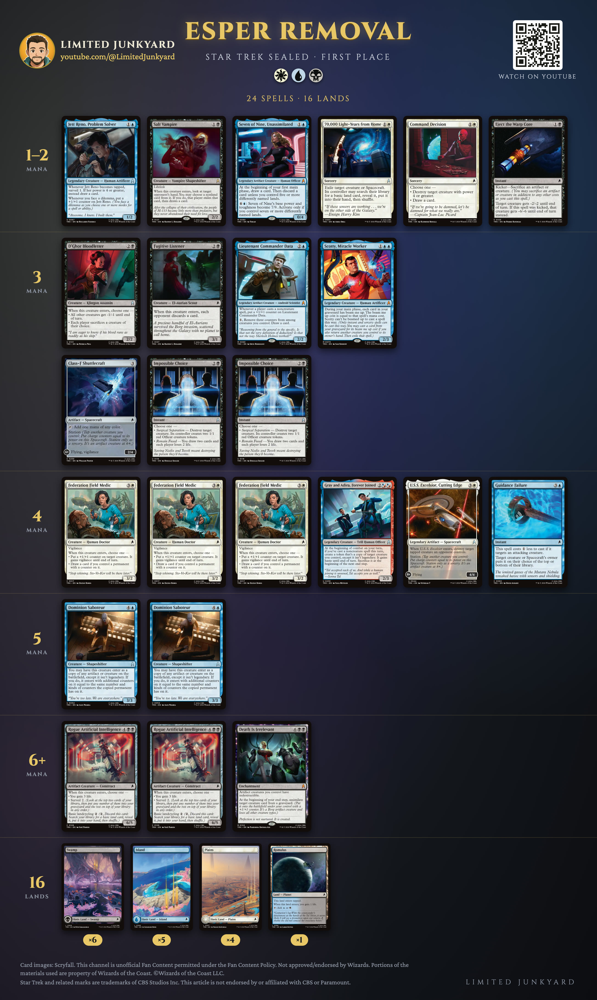
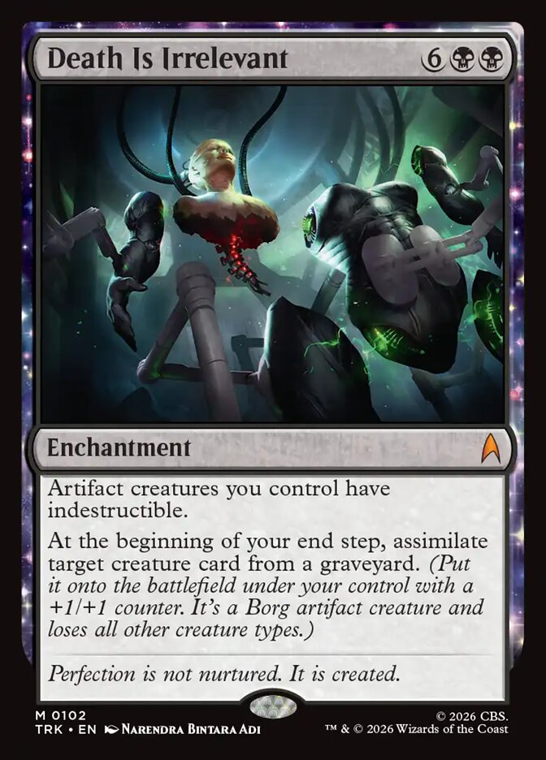
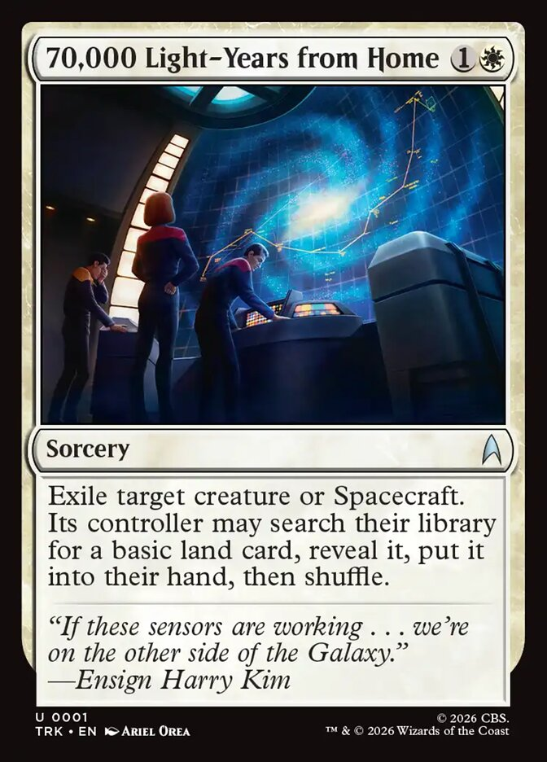

Home · Star Trek
Esper Removal: The Sealed Deck That Won My First Star Trek Prerelease
My first Star Trek prerelease: four wins, an intentional draw, then the Top 8, and first place. This is the sealed deck that did it. White, blue and black, and one card with red in its cost.
My summary, written the same night:
“The deck was absolutely disgusting, beautiful. Play 3-4 colors, you need all the removal. I had a bunch of broken mythics but every card in the deck was great.”Balazs, Limited Junkyard

The decklist
Creatures (15)
- 1 D'Ghor Bloodletter
- 1 Seven of Nine, Unassimilated
- 1 Lieutenant Commander Data
- 1 Scotty, Miracle Worker
- 3 Federation Field Medic
- 1 Salt Vampire
- 1 Fugitive Listener
- 1 Jett Reno, Problem Solver
- 1 Gray and Adira, Forever Joined
- 2 Dominion Saboteur
- 2 Rogue Artificial Intelligence
Spacecraft (2)
- 1 U.S.S. Excelsior, Cutting Edge
- 1 Class-F Shuttlecraft
Instants and sorceries (6)
- 1 70,000 Light-Years from Home
- 1 Command Decision
- 2 Impossible Choice
- 1 Eject the Warp Core
- 1 Guidance Failure
Other spells (1)
- 1 Death Is Irrelevant
Lands (16)
- 6 Swamp
- 5 Island
- 4 Plains
- 1 Romulus
All the removal
Eight of the 24 spells deal with a creature. 70,000 Light-Years from Home exiles one for two mana (they may fetch a basic land for it). Command Decision destroys a creature with power 4 or more, or draws a card. Two Impossible Choice destroy a creature and leave them two 1/1s. Eject the Warp Core gives -2/-2 at instant speed, or -6/-6 if you sacrifice something. Guidance Failure sends an attacker to the top or bottom of its owner's library.
Two more come on bodies: D'Ghor Bloodletter makes each player sacrifice a creature (or shrinks every other creature by -1/-1), and U.S.S. Excelsior destroys a tapped creature when it enters.
In my words from that night: "I basically killed early creatures with removal", "I killed everything constantly", "I had infinite removal". Both white two-mana removal spells overperformed.
And the cards kept coming
Seven of Nine costs two and draws a card at the start of every one of your turns (then discards one, unless you control five differently named lands). Against a landfall deck, "I just drew infinite cards with the blue 2 mana mythic".
Then the cards that leave something behind. Three Federation Field Medics draw when you control a permanent with a counter on it, and Lieutenant Commander Data collects counters every time anyone casts a noncreature spell. Impossible Choice can draw two instead of killing. Salt Vampire and Fugitive Listener take a card from their hand. Two Rogue Artificial Intelligences are 6/5s, or a basic land for two mana when you need one.
Gray and Adira copy one of your creatures each turn you cast a noncreature spell, and the copy enters, so its enters ability fires again. "Copying things from my side that drew cards, was amazing."
The mythic that brings it back
Death Is Irrelevant costs eight. At the end of each of your turns it puts a creature card from any graveyard onto the battlefield under your control. It won my first round, and it won my Top 8 semifinal.
The loop: D'Ghor Bloodletter enters, each player sacrifices a creature. I sacrificed the Bloodletter itself, and at the end of the turn Death Is Irrelevant brought it back, so it happened again next turn. "Repeatedly bringing back the 3 mana creature that makes everyone sacrifice a creature."
Before that, Lieutenant Commander Data grew with every noncreature spell, and Dominion Saboteur copied him, counters and all, and the copy isn't legendary, so both stay. "They were like 8/8 smacking."
Three colors and a red card
Sixteen lands: 6 Swamp, 5 Island, 4 Plains and Romulus, a Planet that taps for blue or black. No Mountain, and still a red card: Gray and Adira cost two generic mana and two blue-or-red hybrid symbols, so blue pays all of it. Class-F Shuttlecraft taps for any color and the Rogue AIs cycle for a basic.
"There is a ton of fixing, mana was never an issue." My advice from the same night: play three or four colors, because you want all the removal.
Key cards

Death Is Irrelevant
Eight mana for a creature back every turn, from any graveyard, and your artifact creatures are indestructible. With D'Ghor Bloodletter it's a sacrifice every turn for them, and the same Bloodletter for you.

70,000 Light-Years from Home
Two mana, exile any creature or Spacecraft. They get a basic land for it, which matters less every turn the game goes on, so it went on their best creature, late.

Gray and Adira, Forever Joined
Any noncreature spell turns on a hasty copy of one of your creatures for the turn, and the copy's enters ability fires: a Field Medic's card, a Salt Vampire's look at their hand. Blue pays the whole cost.
More from Limited Junkyard
- Star Trek Sealed: This Is How You Win: every round this deck played, in a video.
- The Star Trek prerelease guide (video)
- Prerelease cheat sheet, two pages, print it for your deck box
- My top 10 commons and uncommons in each color, the ten best in each color, ranked
- Every common and uncommon rated, a grade and a reason for each one
- Every rare and mythic rated, the bombs, the traps, and everything between
- New videos every week: youtube.com/@LimitedJunkyard
Sources. The decklist is the 40 cards Balazs registered (his deck photo and pool, read card by card); every card name is checked against Scryfall's card data. The deck image shows the standard Star Trek printings.